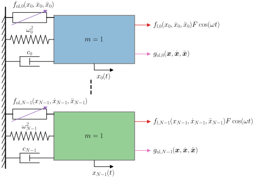

The Method of Multiple Scales
This page details the dynamical systems on which the Method of Multiple Scales (MMS) is applied, how it is applied, how steady state responses can be derived, and how their stability can be evaluated.
Detailed descriptions of the MMS and its variants can be found in [1, 2, 3, 4]. Only the version used in the oscilate package is described below.
Dynamical systems of interest
Coupled oscillators system
Systems considered are typically composed of \(N\) coupled nonlinear equations of the form
The \(x_i(t)\) (\(i=0,...,N-1\)) are the oscillators’ coordinates, and represent the degrees of freedom (dof) of the system.
is the vector containing all the oscillators’ coordinates (\(^\intercal\) denotes the transpose), \(\omega_i\) are their natural frequencies, \(t\) is the time, \(\dot{(\bullet)} = \textrm{d}(\bullet)/\textrm{d}t\) denotes a time-derivative. \(f_i\) are functions which can contain:
Weak linear terms in \(x_i\), \(\dot{x}_i\), or \(\ddot{x}_i\).
Weak linear coupling terms involving \(x_j\), \(\dot{x}_j\), or \(\ddot{x}_j\) with \(j \neq i\).
Weak nonlinear terms. Taylor expansions are performed to approximate nonlinear terms as polynomial nonlinearities.
Forcing terms, which can be:
Hard (appearing at leading order) or weak (small).
Primarily harmonic, e.g., \(F \cos(\omega t)\), where \(F\) and \(\omega\) are the forcing amplitude and frequency, respectively.
Modulated by any function (constant, linear, or nonlinear) to model parametric forcing (e.g., \(x_i(t) F \cos(\omega t)\)).
Internal resonance relations among oscillators can be specified in a second step by expressing the \(\omega_i\) as a function of a reference frequency. See Dynamical_system. Detuning can also be introduced during this step.
{kind=link}

Illustration of a system of coupled nonlinear oscillators that can be studied using oscilate. \(f_{\text{nl},i}(x_i, \dot{x}_i, \ddot{x}_i)\), \(g_{\text{nl},i}(\boldsymbol{x}, \dot{\boldsymbol{x}}, \ddot{\boldsymbol{x}})\) and \(f_{\text{f},_i}(x_i, \dot{x}_i, \ddot{x}_i)\) represent the intrinsic nonlinear of oscillator \(i\), the nonlinear couplings with other oscillators, and the parametric forcing coeffiicent. A unitary mass is considered for each oscillator, and \(\omega_i^2\) and \(c_i\) are the stiffness (natural frequencies) and the (weak) viscous damping coefficients. Note that this illustration does not represent weak linear terms nor complex coupled parametric forcing, which can be accounted for in the oscilate package.
Complex form
It will later be shown that it may be convenient to rewrite the coupled \(2^{\text{nd}}\) order equations as coupled \(1^{\text{st}}\) order ones through the introduction of complex variables \(z_i(t)\) (see section Complex form of the MMS). These are defined through the transformation
where \(\bar{(\bullet)}\) denotes the complex conjugate, or equivalently,
The \(z_i(t)\), \(i=0,...,N-1\), complex variables therefore encapsulate the state space of the system. Now, noting that
one obtains the coupled, complex first order equations on the complex variables,
where
is the vector of complex coordinates, and functions \(g_i\) are related to \(f_i\) such that
The dynamical system is transformed from oscillator to complex form using complex_form().
Application of the MMS
Asymptotic series and time scales
The starting point is to introduce asymptotic series and multiple time scales in the initial dynamical system. The solution for oscillator \(i\) is sought as a series expansion up to order \(N_e\) (for a leading order term \(\epsilon^0 = 1\)). This expansion takes the form
Time scales are introduced as follows:
where \(t_0\) is the fast time, i.e. the time used to describe the oscillations, while \(t_1, \; t_2,\; \cdots,\; t_{N_e}\) are slow times, associated to amplitude and phase variations of the solutions in time. In addition, the chain rule gives
The introduction of asymptotic series and time scales are performed using asymptotic_series() and time_scales().
Scaling
The construction of the MMS system requires a scaling of the parameters. Most scalings are already passed to the MMS through the sub_scaling parameter.
However, the natural frequencies also need to be scaled as they can contain both a leading order term and a detuning term.
Natural frequencies \(\omega_i\) are defined as a function of the reference frequency \(\omega_{\textrm{ref}}\) through the ratio_omega_osc optional parameter, which is then used in oscillators_frequencies().
This allows to define internal resonance relations among the oscillators.
If these internal resonances are not perfect, detunings can be introduced through the detunings optional parameter, which needs to be scaled and part of the sub_scaling parameter.
To write the MMS system it is convenient to introduce the leading order natural frequencies
where \(r_i\) stands for ratio_omega_osc[i].
The multiple scales system
Introducing the asymptotic series, the time scales and the scaled parameters in the initial dynamical system (see Dynamical_system) results in \(N_e+1\) dynamical systems, each one appearing at different orders of \(\epsilon\).
Denoting time scales derivatives as
introducing the vector of time scales
where \(^\intercal\) denotes the transpose, and the vectors of asymptotic coordinates
which contains all the asymptotic terms of order \(i\), the MMS equations can be written as
Consider oscillator \(i\) at order \(j\):
The left-hand side term represents a harmonic oscillator of frequency \(\omega_{i,0}\) oscillating with respect to the fast time \(t_0\).
The right-hand side term \(f_{i}^{(j)}\) is analogous to a forcing generated by all combinations of terms that appear on oscillator \(i\)’s equation at order \(\epsilon^j\). This can involve lower order terms \(x_{i,\ell}, \; \ell \leq j\), coupling terms \(x_{k, \ell}, \; k \neq j,\; \ell \leq j\), their derivatives and cross-derivatives with respect to the time scales, and physical forcing terms. The later is responsible for the dependency on \(t_0,\; t_1\). The reason why slower time scales are not involved will be explained in the following.
Function \(f_{i}^{(j)}\) tends to get increasingly complex as the order increases because the initial equations generate more high order terms than low order ones.
This operation is performed using compute_EqO().
Note that internal resonance relations can be given through the ratio_omega_osc optional parameter, which is then used in oscillators_frequencies().
Frequency of interest
The response of \(x_i\) will be analysed at a frequency \(\omega\), defined as
where \(\omega_{\textrm{MMS}}\) is the central MMS frequency, controlled through the ratio_omegaMMS optional parameter and expressed in terms of omega_ref, and \(\sigma\) is a detuning about that frequency. In case the forced response is studied, \(\omega\) corresponds to the forcing frequency. In case the free response is studied, \(\omega\) corresponds to the frequency of free oscillations, which generates the backbone curve of the forced response. Note that \(\omega t = \omega_{\textrm{MMS}} t_0 + \sigma t_1\). This is the reason why the forcing only involves these two time scales in the right-hand side functions of the MMS system.
Iteratively solving the MMS system
The multiple scales system can be solved iteratively by solving successively the systems of equations at each order.
Leading order solution
The leading order solution for oscillator \(i\) must satisfy
It is sought as
where \(x_{i,0}^\textrm{h}(\boldsymbol{t})\) and \(x_{i,0}^\textrm{p}(t_0, t_1)\) are the leading order homogeneous and particular sollutions, respectively.
It is now conveninent to introduce the slow times vector
This way, one can express the leading order solutions as
where \(A_i\) is a slow time-dependent complex amplitude to be determined while \(B_i\) is a time-independent function of the forcing parameters. \(cc\) denotes the complex conjugate. Note that in most situations, forcing does not appear at leading order (i.e. forcing is weak), so \(B_i=0\).
In the following it will be convenient to use the notations
The leading order solutions are defined in sol_order_0().
Higher order solutions
Once the leading order solutions are computed, they can be injected in the \(1^\textrm{st}\) higher order equations, where they (and their derivatives) appear as forcing terms, potentially together with physical forcing. The \(1^\textrm{st}\) higher order equation for oscillator \(i\) is
The forcing terms that involve oscillations at \(\omega_{i,0}\) would force the oscillator on its natural frequency. Moreover, damping is always weak in the MMS, so damping terms of the form \(c \textrm{D}_0 x_{i,1}\) do not appear at this order. The aforementioned forcing terms would thus lead to unbounded solutions, which is unphysical. These forcing terms, called secular terms, must therefore be eliminated. For instance, the \(1^\textrm{st}\) higher order equation for oscillator \(i\) with the secular terms cancelled is
where \(\breve{f}_{i}^{(1)}\) is \(f_{i}^{(1)}\) with the secular terms cancelled, i.e. without terms oscillating as \(\omega_{i,0}\). After cancelation of the secular terms, each oscillator’s equation can be solved as a forced harmonic oscillator with the independent variable \(t_0\).
Note that only the particular solutions are considered when solving higher order terms, i.e.
This choice can be justified if one assumes that initial conditions are of leading order. Though this is questionable, it is assumed here. A more advanced treatment of the initial conditions of higher order solutions is detailed in [5] and section Complex form of the MMS.
The higher order solutions \(x_{i,1}(\boldsymbol{t})\) are expressed as a function of the leading order unknown amplitudes \(\boldsymbol{A}(\boldsymbol{t}_s)\), their slow time derivatives \(\textrm{D}_i\boldsymbol{A}(\boldsymbol{t}_s), \; i=1, ..., N_e\), and forcing terms if any (including the hard forcing amplitudes \(\boldsymbol{B}\)).
This process is repeated successively at each order, i.e. the computed solutions are introduced in the next higher order system of equations, secular terms are cancelled and the next higher order solutions are computed.
The secular terms are identified in secular_analysis() and the leading order solutions are computed in sol_higher_order().
Note that sol_higher_order() is applied on equations with only \(t_0\) as the independent variable so as to allow the use of dsolve().
This is enforced using system_t0(), which temporarily ignores the dependency of \(\boldsymbol{A}(\boldsymbol{t}_s)\) on the slow time scales.
Secular analysis
At this stage, the solutions are all expressed in terms of the unknown amplitudes \(\boldsymbol{A}(\boldsymbol{t}_s)\) and their slow time derivatives \(\textrm{D}_1 A_i(\boldsymbol{t}_s),\; \cdots,\; \textrm{D}_{N_e} A_i(\boldsymbol{t}_s)\). These can be obtained from the elimination of the secular terms (called secular conditions), as described below.
The \(i^\textrm{th}\) MMS equation at \(1^\textrm{st}\) higher order involves the slow time derivative \(\textrm{D}_1 A_i(\boldsymbol{t}_s)\), which appears in the secular term. It is coming from the chain rule
In addition, the \(\textrm{D}_1 A_j(\boldsymbol{t}_s),\; j\neq i\) do not appear in the \(i^\textrm{th}\) MMS equation as couplings among oscillators are weak. It is thus possible to use the secular conditions in order to express the \(\textrm{D}_1 A_i(\boldsymbol{t}_s)\) as a function of \(\boldsymbol{A}(\boldsymbol{t}_s)\).
This process can be done successively at each order to obtain the system of complex modulation (or slow time) equations
\(f_{A_i}^{(j)}(\boldsymbol{A}, t_1)\) are functions governing the modulation of \(A_i\) with respect to the slow time \(t_j\).
Note the dependency of \(f_{A_i}^{(j)}\) on \(t_1\) due to the possible presence of forcing. The complex modulation equations are derived in secular_analysis().
The above system of \(1^\textrm{st}\) order PDE can theoretically be solved to obtain the complex amplitudes \(\boldsymbol{A}\). However, this approach is not the prefered one as
It is more convenient to deal with real variables than complex ones to get a physical meaning from the analysis,
It is more convenient to deal with autonomous systems (without the explicit \(t_1\)-dependency) than nonautonomous ones,
The PDEs are complex.
The first two points can be achieved introducing new coordinates, as described thereafter.
Modulation equations
Polar coordinates
As discussed previously, it is more convenient to deal with real variables than complex ones. This can be done introducing the polar coordinates \(a_i\) and \(\phi_i\) for oscillator \(i\) such that
\(a_i\) and \(\phi_i\) correspond to the amplitude and phase of the leading solution for oscillator \(i\), respectively. With these new coordinates and introducing
the modulation equations on the \(A_i(\boldsymbol{t}_s)\) can be split into real and imaginary terms, leading to
The \(\epsilon^j \rightarrow\) indicate a system of 2 equations originating from the secular analysis at order \(j\). As one has
it is convenient to pre-multiply the modulation equations on the \(A_i(\boldsymbol{t}_s)\) by \(e^{-\textrm{j} \phi_i(\boldsymbol{t}_s)}\) or even \(\gamma e^{-\textrm{j} \phi_i(\boldsymbol{t}_s)}\) with, for instance, \(\gamma = 2\). This avoids the presence of \(\cos(\phi_i)\), \(\sin(\phi_i)\) and many \(1/2\) terms in the modulation equations. The modulation functions on polar coordinates are therefore defined as
The modulation equations system on the polar coordinates involves only real variables, but functions \(\hat{f}_{a_i}^{(j)}\) and \(\hat{f}_{\phi_i}^{(j)}\) are still nonautonomous due to the explicit dependency on \(t_1\).
The polar coordinates are introduced in polar_coordinates(). The real modulation equations are only computed for the autonomous system, as described below.
Autonomous phase coordinates
The presence of nonautonomous terms stems from forcing terms, which involve \(\cos(\sigma t_1 - \phi_i), \; \sin(\sigma t_1 - \phi_i)\) in the polar modulation functions of oscillator \(i\). A change of phase coordinates is required to make this autonomous. Moreover, the change of phase coordinate is necessary even in the absence of forcing for a convenient representation of the leading order solution. Indeed, the solution for \(x^{\textrm{h}}_{i,0}(\boldsymbol{t})\) written in terms of the current polar coordinates is
However, one would eventually like to express the oscillations of oscillator \(i\) in terms of the frequency \(\omega\). To force its appearance, we recall that
Introducing this in the leading order solution leads to
It therefore appears convenient to introduce the new phase coordinate \(\beta_i(\boldsymbol{t}_s)\) as
which allows to write the leading order solution as
In addition, and as discussed previously, the introduction of these new phase coordinates removes the explicit dependency of the modulation functions on \(t_1\), which was due to terms \(\cos(\sigma t_1 - \phi_i), \; \sin(\sigma t_1 - \phi_i)\). The forcing phase being zero (i.e. reference phase), the \(\beta_i(\boldsymbol{t}_s)\) can be seen as the phases relative to the forcing.
Introducing the notation
the modulation equations can be rewritten as
The above system is the key result of the application of the MMS as it governs the modulation of leading order amplitudes and phases, on which all higher order solutions depend. It can be solved numerically or analytically, if analytical solutions exist, though it is generally not the case. An analytical resolution is shown in Van der Pol oscillator. The modulation system can also be rewritten in a more compact form as discussed in the following.
The autonomous phase coordinates are introduced in autonomous_phases() and the modulation equations are computed in modulation_equations().
All solutions previously computed using the complex amplitudes \(\boldsymbol{A}(\boldsymbol{t}_s)\) can be rewritten in terms of the polar coordinates \(\boldsymbol{a}(\boldsymbol{t}_s),\; \boldsymbol{\beta}(\boldsymbol{t}_s)\) using sol_x_polar().
Reconstituted equations
The reconstitution method consists in combining the modulation equations at each slow time scales in order to obtain modulation equations in the physical time. The approach used in the oscilate package corresponds to the Complete Inconsistent Method discussed in [3], in opposition to consistent approaches which treat each order individually.
Recalling the chain rule
and reintroducing the physical time, the systems at each order can be summed up to write
where
The MMS system then obtained represents a nonlinear autonomous system of \(2N\) coupled \(1^{\textrm{st}}\) order PDEs, with the physical time \(t\) as the independent variable. Like the time scales-dependent modulation equations, they can be solved numerically or analytically, if analytical solutions exist.
These physical time-dependent modulation equations are also computed in modulation_equations().
Note that after reintroduction of the physical time, the leading order, homogeneous solution for oscillator \(i\) takes the form
Complex form of the MMS
The application of the MMS to the system’s equations in oscillator form was described above. Alternatively, the MMS can be applied to the system’s equations in complex form (see section Complex form). The procedure is very similar, but the fact that the complex variables \(\boldsymbol{z}\) embed the state space \((\boldsymbol{x}, \dot{\boldsymbol{x}})\) allows to extract more information from the system’s dynamics, resulting in more accurate solutions and modulation equations. The differences between the oscillator and complex forms of the equations are stressed thereafter.
The multiple scales system
Series expansions of the \(z_i(t)\) variables are performed such that
time scales are introduced in the same way as before, the chain rule is used (only the \(1^{\text{st}}\) order time derivatives are needed), parameters are scaled, oscillators’ natural frequencies and the frequency of interest are expressed in terms of a reference frequency, possibly with detunings. This leads to the complex MMS system
Like with the oscillator form, these equations represent harmonic oscillators of natural frequencies \(+ \omega_{i,0}\) in the fast time, and subjected to forcing-like terms.
Leading order solution
In the same way as with the oscillator form, the leading order solution for oscillator \(i\) satisfies
such that it takes the form
These homogeneous and particular solutions can be expressed
where \(A_i\) is a slow time-dependent complex amplitude to be determined while \(B_{i,\pm}\) are time-independent functions of the forcing parameters. Note that in most situations, forcing does not appear at leading order (i.e. forcing is weak), so \(B_{i,\pm}=0\).
In the following it will be convenient to use the notations
The leading order solutions are defined in sol_order_0().
Higher order solutions
The higher order solutions can be derived in the same way as with the oscillator form, noticing that the terms in \(e^{+\textrm{j}\omega_{i,0} t_0}\) in the equation of oscillator \(i\) are secular and must therefore be eliminated. The \(1^{\textrm{st}}\) higher order solution of oscillator \(i\) is hence governed by the equation
where \(\breve{g}_{i}^{(1)}\) is \(g_{i}^{(1)}\) with the secular terms cancelled.
It is interesting to stress that this cancellation of secular terms is equivalent to fulfilling the condition that the particular solution of a linear problem must be orthogonal to the kernel of the adjoint problem. To apply this, it is convenient to introduce the differential operator \(\mathscr{L}_i\) such that
This way, the initial problem writes
and the associated adjoint problem is
where the adjoint operator \(\mathscr{L}^{\dagger}_i\) is defined such that
Given the \(\omega_{i,0}\)-periodicity of the homogeneous solution, it is relevant to use the metric associated to the \(L^2\) inner product
From there, one can show that the operator is anti self-adjoint, i.e. \(\mathscr{L}^{\dagger}_i = - \mathscr{L}_i\), and the adjoint kernel is
The condition to fulfil is therefore
such that the adjoint kernel orthogonality condition is equivalent to imposing a zero \(e^{\textrm{j} \omega_{i,0} t_0}\) component on \({g}_{i}^{(1)}\), i.e. cancelling the secular terms.
After the cancellation of secular terms, the higher order solutions \(z_{i,1}(\boldsymbol{t})\) can be expressed as a function of the leading order unknown amplitudes \(\boldsymbol{A}(\boldsymbol{t}_s)\), their slow time derivatives \(\textrm{D}_i\boldsymbol{A}(\boldsymbol{t}_s), \; i=1, ..., N_e\), and forcing terms if any (including the hard forcing amplitudes \(\boldsymbol{B}\)).
At this stage, there is a key difference to highlight between the present approach and the application of the MMS to the system in oscillator form. In the complex form, the secular terms cancelled are those oscillating at \(e^{+\textrm{j} \omega_{i,0} t_0}\), but not \(e^{-\textrm{j} \omega_{i,0} t_0}\). Therefore, when reconstructing the oscillator’s motion \(x_{i} = z_{i} + \bar{z}_{i}\), there can be higher order terms contributing to the term in \(\cos(\omega_{i,0} t_0), \; \sin(\omega_{i,0} t_0)\). In other words, the higher order particular solutions enrich the main oscillations term. On the contrary, with the oscillator form there are no contributions for higher order particular solutions. Indeed, the cancellation of secular terms is more stringent, imposing no terms in \(\cos(\omega_{i,0} t_0)\) nor \(\sin(\omega_{i,0} t_0)\), therefore setting to zero both \(e^{+\textrm{j} \omega_{i,0} t_0}\) and \(e^{-\textrm{j} \omega_{i,0} t_0}\) terms. Contributions to the main oscillations term can therefore only arise from the homogeneous higher order solutions, but there are no conditions imposing a proper choice of higher order homogeneous amplitudes. These conditions can only be derived from a formulation of the system’s dynamics that embeds its state space, as shown in [5].
There is a choice left for the higher order homogeneous solutions. With the present complex approach, it is relevant to set these to zero so as to fully capture oscillations at \(e^{+\textrm{j} \omega_{i,0} t_0}\) through the leading order term. Their amplitude in the full solutions \(z_i\) are thus simply the complex amplitudes \(A_i\).
As with the oscillator form, the process described above is repeated successively at each order, i.e. the computed solutions are introduced in the next higher order system of equations, secular terms are cancelled and the next higher order solutions are computed.
The secular terms are identified in secular_analysis() and the leading order solutions are computed in sol_higher_order().
Secular analysis and modulation equations
The secular analysis is carried out in the same way as with the oscillator form. A small, practical difference is that the secular terms are multiplied by \(\textrm{j}\) to retrieve the system of complex modulation equations
with a structure similar to that of the oscillator form. From there on, the derivation of modulation equations is unchanged. Still, one must keep in mind that these modulation equations will govern the amplitude and phase evolution of the complex coordinates, only indirectly that of the oscillators’ motion.
The complex modulation equations are derived in secular_analysis().
Reconstruction of the oscillators’ motion
The oscillators’ motion is simply reconstructed at each order from the definition of the complex coordinates. For oscillator \(i\) and at order \(j\), this results in
At this stage, the complex form approach branches back with the oscillator form one.
The oscillators’ motion is retrieved using sol_xO().
Evaluation at steady state
Steady state solutions
Steady state conditions
At steady state, the solutions’ amplitudes and phases are time-independent. One therefore has, for each oscillator \(i=1,...,N\),
and the homogeneous steady state solutions take the form
MMS modulation equations at steady state
The steady state amplitudes \(\boldsymbol{a}\) and phases \(\boldsymbol{\beta}\) are governed by the modulation equations evaluated at steady state, which take the form
This is now an algebraic system of equations.
MMS solutions at steady state
Solving the modulation equations at steady state yields the steady state solutions \(\boldsymbol{a}, \boldsymbol{\beta}\). The system can be solved directly for \(\boldsymbol{a}\) and \(\boldsymbol{\beta}\), yielding explicit analytical solutions, but this is often complex as the system is nonlinear.
A possibility that is sometimes available to obtain analytical solutions is to rearrange the equations to isolate the phase terms \(\cos(f(\boldsymbol{\beta})),\; \sin(f(\boldsymbol{\beta}))\) where \(f(\boldsymbol{\beta})\) is a linear function of the \(\beta_i\). Then the equations can be squared and summed up to obtain an equation on \(a_i\) only and/or \(a_j\) as a function of \(a_i\). The \(a_j\) can be expressed as a function of \(a_i\), leading to a polynomial equation on \(a_i\). The resulting polynomial equation can rarely be solved directly as the polynomial involved are often of high order. However, the polynomial is often quadratic in the detuning \(\sigma\) and forcing amplitude \(F\). It can therefore be solved for \(\sigma\) and \(F\) with \(a_i\) seen as a parameter. This yields an implicit solution for \(a_i(\sigma) \Rightarrow a_i(\omega)\) and \(a_i(F)\), from which one can deduce the other amplitudes \(a_j\) and phases \(\boldsymbol{\beta}\), thus reconstructing the oscillators’ solutions.
The processus described above is not always feasible. The blocking points are typically to
get rid of phase terms \(\cos(f(\boldsymbol{\beta})),\; \sin(f(\boldsymbol{\beta}))\) in the equations,
express every amplitude \(a_j\) in terms of a single one, \(a_i\),
end up with a polynomial of order 2 in \(\sigma\) and \(F\)
These difficulties become more pronounced when the system involves several oscillators, in which case the amplitudes and phases may only be computed numerically.
To facilitate the derivation of an analytical solution, it is possible to consider the backbone curve (bbc) of the forced solution rather than the forced solution itself. This bbc is computed in the absence of damping and forcing, therefore simplifying the system. Typically, this reduces the number of phase terms appearing. The solving procedure is then the same as that described previously.
Stability analysis
The stability analysis is described in details in Stability analysis.
Stability analysis
Stability information
Consider a steady state solution \((\hat{\boldsymbol{a}} , \hat{\boldsymbol{\beta}})\) such that, for \(i=1,...,N\),
The aim is to determine the stability state of that steady solution, which corresponds to a fixed point in the phase space.
Jacobian matrix
Let’s first introduce the vector of polar coordinates and polar modulation functions
Note that the appearance of \(f_{\beta_i}^*\) in \(\boldsymbol{f}^{(\textrm{p})}\) requires \(a_i \neq 0\), which strongly constraints the type of steady state solutions that can be considered in the approach described below. To relax this constraint, one can use a change of coordinates from polar to cartesian ones. This will be discussed in following sections, after the description of this polar approach.
Using the vectors of polar coordinates and modulation functions, one can write the modulation equations system as
where we introduced the Jacobian matrix
Perturbation of the steady state solution
Let us now consider a small perturbation \(\tilde{\boldsymbol{x}}^{(\textrm{p})}\) of the steady state solution such that
Using a first order Taylor expansion for \(\textrm{d} \tilde{\boldsymbol{x}}^{(\textrm{p})} / \textrm{d} t\), one can write
where \(\left.\textrm{J}^{(\textrm{p})}\right|_{\hat{\boldsymbol{x}}^{(\textrm{p})}}\) denotes the Jacobian matrix evaluated on the steady state solution. The perturbation solution takes the form
where \((\lambda_i, \boldsymbol{\psi}_i),\; i=1, ..., 2N\) are the eigensolutions of the Jacobian (evaluated on \(\hat{\boldsymbol{x}}^{(\textrm{p})}\)).
Stability condition
The steady state solution \(\hat{\boldsymbol{x}}^{(\textrm{p})}\) is considered stable if a small perturbation \(\tilde{\boldsymbol{x}}^{(\textrm{p})}\) vanishes in time, such that solutions close from \(\hat{\boldsymbol{x}}^{(\textrm{p})}\) are converging towards it. This condition is fulfilled if
meaning that all eigenvalues of the Jacobian evaluated on the steady state solution must have negative real parts. If this condition is not met, the system is either quasi stable or unstable.
Bifurcations
A bifurcation occurs when the stability state of the system changes.
- Simple bifurcations occur when at least one eigenvalue crosses the imaginary axis through 0.
Such bifurcations include saddle node and pitchfork bifurcations, which cause jumps of the response and the appearance of lower symmetry solutions, respectively.
- Neimark-Sacker bifurcations occur when a pair of complex conjugate eigenvalues with nonzero real parts cross the imaginary axis.
These bifurcations lead to non periodic solutions.
Simple bifurcations can be detected by evaluating the sign of the Jacobian, as
thereby making \(\det \left.\textrm{J}^{(\textrm{p})}\right|_{\hat{\boldsymbol{x}}^{(\textrm{p})}}\) an important stability indicator. Neimark-Sacker bifurcations are more difficult to detect. Information from the trace of \(\left.\textrm{J}^{(\textrm{p})}\right|_{\hat{\boldsymbol{x}}^{(\textrm{p})}}\) can be considered, or the Routh-Hurwitz criterion can be used. This is not detailed here.
Bifurcation curves
Bifurcation curves are curves constructed by evaluating the coordinates of bifurcation points when varying one or more parameters. The stability state of a solution changes when the response curve crosses a bifurcation curve.
Stability analysis in cartesian coordinates
Limitations of polar coordinates
As mentioned previously, the approach described above fails when one of the oscillator’s leading order amplitude is 0. Indeed, the Jacobian is constructed using the modulation functions
which are defined only if \(a_i=0\). This prevents evaluating the stability of
Trivial solutions, for which no oscillator responds,
1 mode solutions, whose stability can be affected under perturbation from another mode.
These limitations can be overcome using a change of coordinates.
Cartesian coordinates
The leading order homogeneous solution for oscillator \(i\) can be written as
It then appears natural to introduce the cartesian coordinates
in order to rewrite the solution as
In the following it will be convenient to use the cartesian coordinates vectors
Cartesian modulation equations
The cartesian modulation equations can be obtained from the polar ones. To do so, one can write
Then, by identification, one necessarily has
in order to write the modulation equations in cartesian coordinates
Jacobian matrix
As done previously for polar coordinates, let’s introduce the vectors of cartesian coordinates and modulation equations as
Then one can write
where we introduced the Jacobian matrix
Note that there are no constraints related to an oscillator’s amplitude being 0 here. This cartesian coordinates approach therefore allows to investigate how the stability of a steady state solution is affected by a perturbation from an oscillator who’s amplitude is 0 in that steady state solution.
The stability analysis with \(\textrm{J}^{(\textrm{c})}\) is carried out as described previously with \(\textrm{J}^{(\textrm{p})}\).